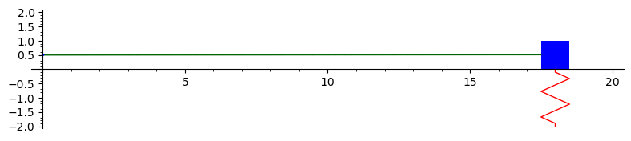
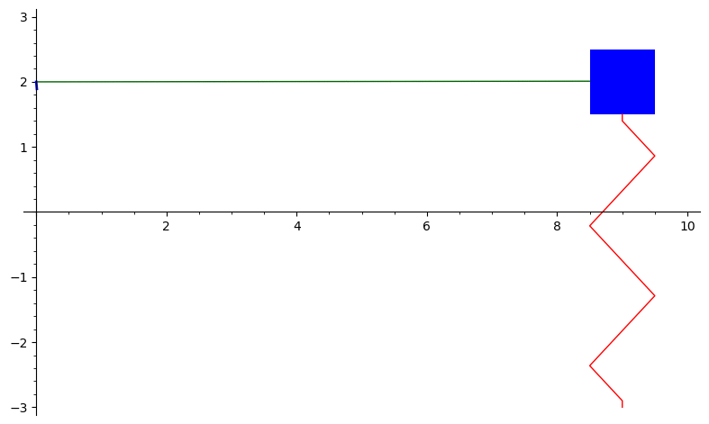
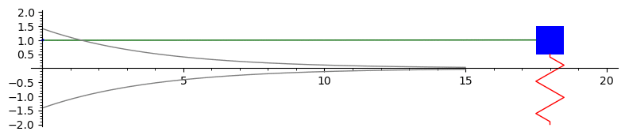

[Go to the Notes on Diffy Qs home page]
Notes on Diffy Qs - Sage demos for section 2.4
On this page the animations are prerendered. There is no reason to run the Sage code unless you changed it. These animations take Sage long time to draw. If you wish to experiment look for the "srange" in the code to make it into fewer frames, the syntax is "srange(start,end,step)". In the code given, the steps are on purpose bigger than what was used to produce the animations, if you want to replicate the animations exactly you have to reduce the step size. Note that in the book the spring is oriented sideways with the positive \(x\) going to the right, and below as we are drawing graphs, positive \(x\) is going up, so the spring is below the mass in the picture to match the book (you could look at the graph sideways).
Undamped motion
The graph below is the solution to \(x'' + 4x = 0\) with initial conditions \(x(0) = 0.5\) and \(x'(0) = 1.\) This represents the undamped motion of a mass on a spring. An animation is drawn of the mass on the spring. The solution is \(x(t) = 0.5 \cos(2t) + 0.5 \sin(2t).\) To plot something different modify the solution below.

Here is the Sage code to produce this animation:
Overdamped motion
The graph below is the solution to \(2x'' + 7x' + 3x = 0\) with initial conditions \(x(0) = 2\) and \(x'(0) = -11.\) This represents overdamped motion of a mass on a spring. The solution is \(x(t) = 4e^{-3t} - 2e^{-0.5t}.\)

Here is the Sage code to produce this animation:
Underdamped motion
The graph below is the solution to \(16x'' + 8x' + 63x = 0\) with initial conditions \(x(0) = 1\) and \(x'(0) = 1.75.\) This represents underdamped motion of a mass on a spring. We also plot the envelope curves in gray.

Here is the Sage code to produce this animation:
The original code is mainly due to Ryan Burkhart.